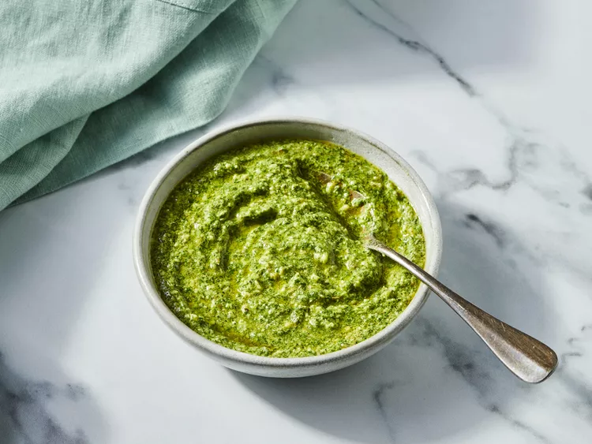
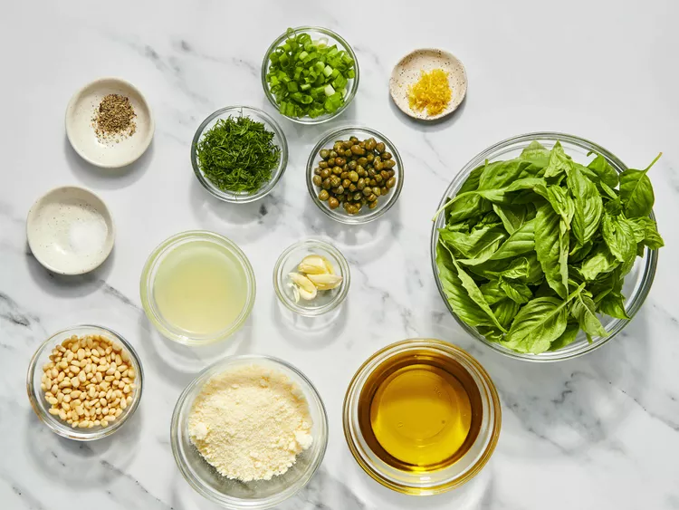
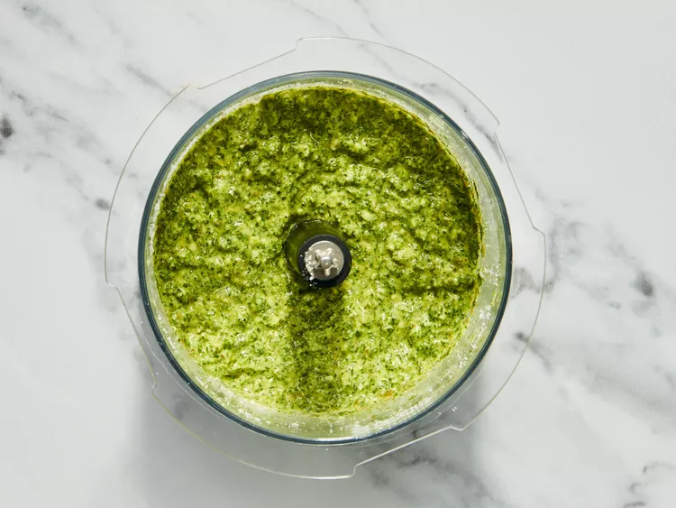
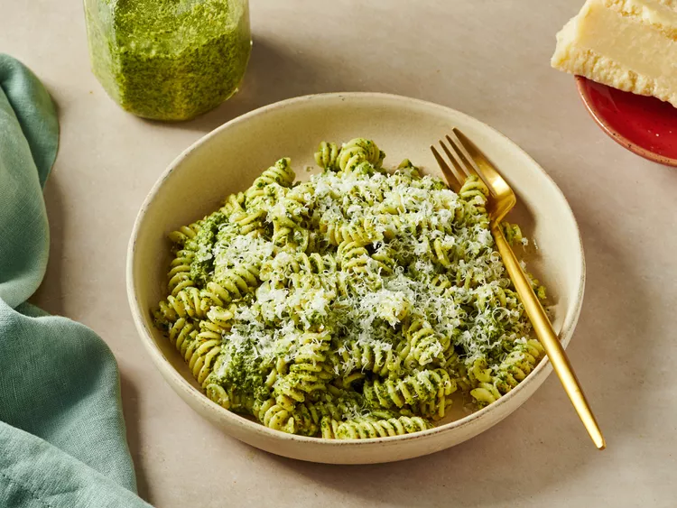
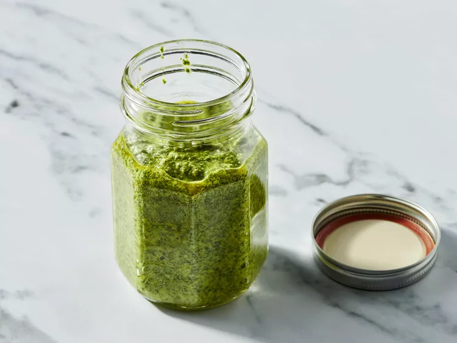

Home
Caper Pesto

Description
This fresh, herby pesto combines basil, dill, and capers with a bright twist of lemon and Parmesan for a zesty, aromatic spread. Perfect for pasta, sandwiches, or as a dip, this pesto puts a briny twist on a timeless Italian sauce.
Ingredients:
- 2 cups packed fresh basil leaves
- 1/2 cup freshly grated parmesan cheese
- 1/2 cup olive oil
- 1/3 cup pine nuts
- 1/4 cup chopped green onions
- 1/4 cup packed fresh dill
- 3 tablespoons capers
- 3 tablespoons lemon juice
- 1 1/2 teaspoons lemon zest
- 2 cloves smashed garlic
- 1/4 teaspoon salt
- 1/4 teaspoon freshly ground black pepper
Steps:
- Gather the ingredients.

- Process basil, Parmesan, oil, pine nuts, green onions, dill, capers, juice, zest, garlic, salt, and pepper in a food processor until nearly smooth.

- To Serve: Toss about 1/4 cup pesto with 2 cups of cooked pasta.

- Chill in an airtight container up to 1 week; freeze up to 3 months.
